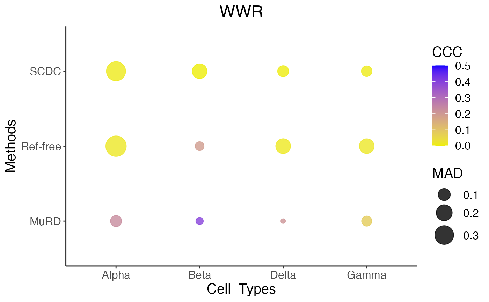
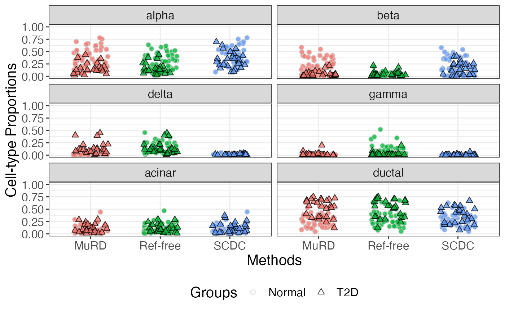
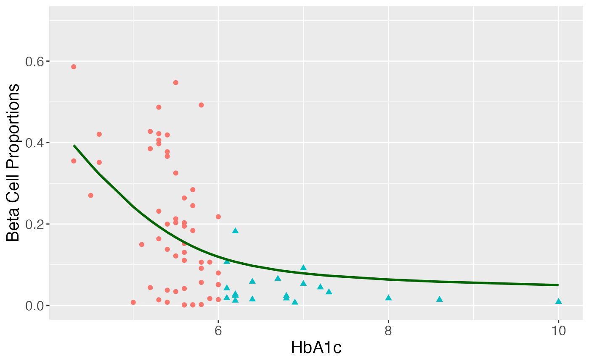

MuRD unifies multiple deconvolution schemes to infer cell type proportions from the target bulk RNA-seq data. Three unique features are embraced in this algorithm: first, MuRD is able to incorporate extra biological information from external data sources enables (e.g., scRNA_seq and other bulk RNA_seq data from independent studies); second, MuRD calibrates the reference-free algorithm by taking into account the proportion estimates from a reference-based approach; third, MuRD is robust to incorrect information from any of the provided data sources.
MuRD deconvolutes raw read counts data which is in ExpressionSet objects based on the package Biobase. As an illustration of the MuRD framework, we conduct both simulation studies and real data analysis based on pancreatic islet data from Fadista et al. (2014) as presented in our paper. Three public scRNA-seq datasets from Baron et al. (2016), Segerstolpe et al. (2016) and Xin et al. (2016) are used. The processed data are available at the …
First, read in scRNA-seq data downloaded from our website
#library(SCDC)
seger <- readRDS("data/segerstolpe.rds")
baron <- readRDS("data/baron.rds")
xin<-readRDS("data/Xin_nonD.rds")Second, use function generateBulk() to create the pseudo bulk samples, where ct.varname specifies the name of cell type clustering result variable. sample specifies the name of subjects information variable. ct.sub specifies the names of cell types used to construct pseudo bulk samples. Here we provide an example where the pseudo bulk samples are generated from Segerstolpe et al. (2016).
library(MuRD)
set.seed(1234567)
pseudo.seger<-generateBulk(seger[["sc.eset.qc"]], ct.varname = "cluster", sample = "sample", ct.sub = c("alpha","beta","delta","gamma"), nbulk = 50, low_s = 0.3, upp_s = 0.7)The generated pseudo bulk object contains a matrix of true cell type proportions (pseudo.seger$truep) and the ExpressionSet object (pseudo.seger$pseudo_eset).
MuRD algorithm takes as input the target bulk data, subject-level cell type proportions from reference-based approach, and population-level cell type proportions. For illustration, we use the function SCDC_prop() from SCDC package (Dong et al. (2021)). We regard the estimated cell type proportions from Segerstolpe et al. (2016) as the correct subject-level cell type information (c_refbase_est) and the estimated ones with subject-label shuffle from Xin et al. (2016) as the incorrect information (w_refbase_est).
library(SCDC)
set.seed(1234567)
#correct subject-level proportions
correct_refest<-SCDC_prop(bulk.eset = pseudo.seger[["pseudo_eset"]], sc.eset = seger[["sc.eset.qc"]], ct.varname = "cluster", sample = "sample", weight.basis = T, ct.sub = c("alpha","beta","delta","gamma"))
c_refbase_est = correct_refest$prop.est.mvw
#incorrect subject-level proportions
incorrect_refest<-SCDC_prop(bulk.eset = pseudo.seger[["pseudo_eset"]], sc.eset = xin, ct.varname = "cluster",sample = "sample", weight.basis = T, ct.sub = c("alpha","beta","delta","gamma"))
w_refbase_est = incorrect_refest$prop.est.mvw
w_refbase_est = w_refbase_est[sample(1:nrow(w_refbase_est)),]We provide the function evaluate to assess the performance of estimated proportions versus the true proportions based on mean absolute deviance (MAD, the smaller the better), concordance correlation coefficient (CCC, the larger the better), and Pearson correlation coefficient (Pearson, the larger the better).
evaluate(c_refbase_est,pseudo.seger$true_p)$all.eva
evaluate(w_refbase_est,pseudo.seger$true_p)$all.evaWe can obtain population-level mean proportions, with the one using Segerstolpe et al. (2016) as correct (c_ave_est) and the one using Xin et al. (2016) as incorrect (w_ave_est). The function pop.ct.prop.subj() is used to extract such information given subject-level proportions. We also provide the true mean proportions (true_ave) from the target pseudo bulk samples. Besides, MuRD also requires a list of prespecified marker genes, which could be selected from external scRNA-seq data based on pre-defined expression threshold, prior biological knowledge, or information reported in literature. The list of correct markers (cmarkers.rds) and the list of wrong markers (wmarkers.rds) for this simulation study are available in files cmarkers.rds and wmarkers.rds, respectively.
c_list_marker = readRDS("data/cmarkers.rds") #may write a function for selecting marker genes
w_list_marker = readRDS("data/wmarkers.rds") #may write a function for selecting marker genes
c_ave_est = pop.ct.prop.subj(c_refbase_est)
w_ave_est = pop.ct.prop.subj(w_refbase_est)
true_ave = pop.ct.prop.subj(pseudo.seger$true_p)
true_ave## alpha beta delta gamma
## 0.62117169 0.20960298 0.08329970 0.08592562
c_ave_est## alpha beta delta gamma
## 0.60683617 0.23585368 0.08774786 0.06956229
w_ave_est## alpha beta delta gamma
## 0.937102260 0.044816807 0.003727395 0.014353538Finally, we integrate all information into MuRD algorithm to conduct deconvolution for the pseudo bulk data. For illustration, we focus on the case with wrong marker genes (W), wrong subject-level proportions (W), and correct population-level mean proportions (R). The function MuRD.onegroup() will return a list containing estimated cell type proportions corresponding to each tuning value (est.prop) and a sequence of goodness-of-fit values corresponding to each tuning value (metrics). The smaller the better.
MuRD.object<-MuRD.onegroup(bulk.data=pseudo.seger[["pseudo_eset"]],list.marker=w_list_marker,celltype.unique=c("alpha","beta","delta","gamma"),subject.level.proportion=w_refbase_est,population.level.proportion=c_ave_est)The function MuRD.predict.props() helps extract the recovered cell type proportions via MuRD; the function reffree.predict.prop() helps extract the estimated proportions via reference-free approach. We use the function evaluate to assess the performance of estimated proportions versus the true proportions based on MAD, CCC, and Pearson. We also provide the visualization via a dot plot using MAD and CCC. The following results show that our method (named MuRD) has smaller MAD and higher CCC and Pearson than other methods even when misleading infomration is used.
MuRD.est = MuRD.predict.prop(murd.output=MuRD.object)
reffree.est = reffree.predict.prop(murd.output=MuRD.object)
evaluate(MuRD.est,pseudo.seger$true_p)$all.eva## all.mad all.ccc all.cor
## 1 0.05057331 0.2275803 0.6944681
evaluate(reffree.est,pseudo.seger$true_p)$all.eva## all.mad all.ccc all.cor
## 1 0.1871329 0.0578328 0.6236459
evaluate(w_refbase_est,pseudo.seger$true_p)$all.eva## all.mad all.ccc all.cor
## 1 0.1579653 0.004388256 0.1302759
library(reshape2)
library(ggplot2)
data = as.data.frame(cbind(Methods= c("MuRD","Ref-free","SCDC","MuRD","Ref-free","SCDC","MuRD","Ref-free","SCDC","MuRD","Ref-free","SCDC"), Cell_Types=c("Alpha","Alpha","Alpha","Beta","Beta","Beta", "Delta","Delta","Delta","Gamma","Gamma","Gamma")))
MuRD_results = evaluate(MuRD.est,pseudo.seger$true_p)$cell.type.eva
reffree_results = evaluate(reffree.est,pseudo.seger$true_p)$cell.type.eva
SCDC_results = evaluate(w_refbase_est,pseudo.seger$true_p)$cell.type.eva
data$MAD = c(rbind(MuRD_results$ct.mad,reffree_results$ct.mad,SCDC_results$ct.mad))
data$CCC = c(rbind(MuRD_results$ct.ccc,reffree_results$ct.ccc,SCDC_results$ct.ccc))
ggplot(data, aes(x= Cell_Types, y=Methods, size=MAD, color=CCC, group= Cell_Types)) + geom_point(alpha = 0.8) + theme_classic() + scale_color_gradient(low = "yellow2", high = "blue", space = "Lab", limit = c(-0.001, 0.5)) + scale_size(range = c(2, 10))+ ggtitle("WWR")+ theme(text = element_text(size=15),plot.title = element_text(hjust = 0.5))
Now we move forward to analyze a bulk RNA-seq data generated from pancreatic islets by Fadista et al. (2014). We focus on 77 samples with 51 considered as healthy (hbA1C level no larger than 6) and 26 considered as having type 2 diabetes (T2D; hbA1C larger than 6). To obtain the subject-level cell type proportions, we adopted SCDC-ENSAMBLE approach, a SCDC-based method aimed to implement deconvolution via integrating multiple single-cell reference sets (Dong et al. (2021)). scRNA-seq data from Baron et al. (2016) and Segerstolpe et al. (2016) are considered. To allow the potentially different gene expression patterns between the cases and controls, we implemented ENSEMBLE procedures for the samples from the two classes separately.
fadista_77 <- readRDS("data/fadista_77.rds")
#obtain subject-level proportions
#for normal samples
index_normal<-which(fadista_77@phenoData@data$hba1c_class2=="Normal")
fadista.healthy.ens <- SCDC_ENSEMBLE(bulk.eset = fadista_77[,index_normal], sc.eset.list = list(baronh = baron$sc.eset.qc, segerh = seger$sc.eset.qc), ct.varname = "cluster", sample = "sample", truep = NULL, ct.sub = c("alpha","beta","delta","gamma","acinar","ductal"), search.length = 0.01, grid.search = T)
prop_est_normal<-wt_prop(fadista.healthy.ens$w_table[7,1:2], proplist = fadista.healthy.ens$prop.only)
#for diseased samples
index_nnormal<-which(fadista_77@phenoData@data$hba1c_class2!="Normal")
fadista.t2d.ens <- SCDC_ENSEMBLE(bulk.eset = fadista_77[,index_nnormal], sc.eset.list = list(baronh = baron$sc.eset.qc, segerh = seger$sc.eset.qc), ct.varname = "cluster", sample = "sample", truep = NULL, ct.sub = c("alpha","beta","delta","gamma","acinar","ductal"), search.length = 0.01, grid.search = T)
prop_est_t2d <- wt_prop(fadista.t2d.ens$w_table[7,1:2], proplist=fadista.t2d.ens$prop.only)
#combine two groups
prop_est = rbind(prop_est_normal, prop_est_t2d)
prop_est = prop_est[match(colnames(fadista_77),rownames(prop_est)),]
comb_sample = prop_estNext, to obtain the population-level mean proportions, we applied SCDC-ENSEMBLE again to the external bulk expression data from Bunt et al. (2015) and then averaged subject-level proportions for each cell type (Not run).
Bunt <- readRDS("data/Bunt.rds")
colnames(Bunt@phenoData@data)[1]<-"sample"
#obtain population-level mean proportions
bunt.ens <- SCDC_ENSEMBLE(bulk.eset = Bunt, sc.eset.list = list(baronh = baron$sc.eset.qc, segerh = seger$sc.eset.qc), ct.varname = "cluster", sample = "sample", truep = NULL, ct.sub = c("alpha","beta","delta","gamma","acinar","ductal"), search.length = 0.01, grid.search = T)
prop_est_bunt<-wt_prop(bunt.ens$w_table[7,1:2], proplist = bunt.ens$prop.only)
ave_est = pop.ct.prop.subj(prop_est_bunt)The code above may take a long time to run. We have provided the estimated cell-type proportions, named prop_est_bunt.rds. We can directly use the estimates to calculate population-level mean proportions.
prop_est_bunt = readRDS("data/prop_est_bunt.rds")
ave_est = pop.ct.prop.subj(prop_est_bunt)Finally, given a list of pre-specified marker genes, named fad_list_marker.rds , we applied MuRD algorithm to conduct deconvolution. To allow the potentially different gene expression patterns between the cases and controls, we implemented ENSEMBLE procedures for the samples from the two classes separately (may take 5-10 minutes).
#read the list of marker genes
list_marker = readRDS('data/fad_list_marker.rds')
#normal samples
MuRD.object.normal = MuRD.onegroup(bulk.data=fadista_77[,index_normal],list.marker=list_marker,celltype.unique=c("alpha","beta","delta","gamma","acinar","ductal"),subject.level.proportion=comb_sample[index_normal,],population.level.proportion=ave_est, tol=0.0001)
prop.est.normal.MuRD = MuRD.predict.prop(murd.output=MuRD.object.normal)
prop.est.normal.reffree = reffree.predict.prop(murd.output=MuRD.object.normal)
#diseased samples
MuRD.object.nnormal = MuRD.onegroup(bulk.data=fadista_77[,index_nnormal],list.marker=list_marker,celltype.unique=c("alpha","beta","delta","gamma","acinar","ductal"),subject.level.proportion=comb_sample[index_nnormal,],population.level.proportion=ave_est, tol=0.0001)
prop.est.nnormal.MuRD = MuRD.predict.prop(murd.output=MuRD.object.nnormal)
prop.est.nnormal.reffree = reffree.predict.prop(murd.output=MuRD.object.nnormal)
#combine two groups for MuRD
MuRD.est<-comb_sample
MuRD.est[index_normal,]<-prop.est.normal.MuRD
MuRD.est[index_nnormal,]<-prop.est.nnormal.MuRD
#combine two groups for reffree
reffree.est<-comb_sample
reffree.est[index_normal,]<-prop.est.normal.reffree
reffree.est[index_nnormal,]<-prop.est.nnormal.reffreeTo compare the results from MuRD to other methods, we visualize the estimated proportions as follows:
MuRD.est = as.data.frame(MuRD.est)
MuRD.est$id = rownames(MuRD.est)
reffree.est = as.data.frame(reffree.est)
reffree.est$id = rownames(reffree.est)
SCDC.est = comb_sample
SCDC.est = as.data.frame(SCDC.est)
SCDC.est$id = rownames(SCDC.est)
Groups = fadista_77@phenoData@data$hba1c_class2
Groups = as.data.frame(Groups)
Groups$id = rownames(MuRD.est)
est_murd<-melt(data = MuRD.est, id.vars = c("id"))
est_scdc<-melt(data = SCDC.est, id.vars = c("id"))
est_reffree<-melt(data = reffree.est, id.vars = c("id"))
colnames(est_murd)<-colnames(est_scdc)<- colnames(est_reffree)<-c("id", "Cell", "value" )
plot.data<-rbind(est_murd,est_scdc,est_reffree)
plot.data$Methods<-c(rep("MuRD",462),rep("SCDC",462), rep("Ref-free",462))
plot.data<-merge(plot.data,Groups,by="id")
plot.data$order<-ifelse(plot.data$Groups=="Normal",1,2)
plot.data<-plot.data[order(plot.data$order),]
ggplot(data=plot.data,aes(x=Methods, y=value)) +
geom_point(aes(fill = Methods, shape=Groups, color=Groups), size = 2, alpha = 0.8,position = position_jitter(width=0.25, height=0))+
scale_colour_manual( values = c( 'grey80',"Black")) +
scale_shape_manual(values = c(21,24))+
facet_wrap(~ Cell, ncol = 2) +ylim(0,1)+
ylab("Cell-type Proportions")+ theme_bw()+
theme(text = element_text(size=15),legend.position="bottom")+
scale_fill_discrete(name="Methods", guide = FALSE)
To evaluate the negative correlation between HbA1c levels and the beta cell functions, we constructed a generalized additive model using the estimated beta cell-type proportions as responses, some covariates (age, BMI, gender) as linear effects, and HbA1c as non-linear effect. The results from MuRD are presented as follows.
library(mgcv)
library(reshape2)
library(ggplot2)
age<-fadista_77@phenoData@data[["age"]]
bmi<-fadista_77@phenoData@data[["bmi"]]
gender<-fadista_77@phenoData@data[["gender"]]
hba1c<-fadista_77@phenoData@data[["hba1c"]]
fit_gam<-gam(MuRD.est[,'beta']~age+bmi+gender+s(hba1c),family=betar(link="logit"))
data_predict<-data.frame(age=0,bmi=0,gender="Female",hba1c=hba1c)
#plot
fit_plot<-gam(MuRD.est[,'beta']~s(hba1c),family=betar(link="logit"))
Groups<-ifelse(hba1c<=6,"Normal","T2D")
data_plot<-data.frame(Cell_proportions=MuRD.est[,'beta'],hbaic=fadista_77@phenoData@data[["hba1c"]],fitted=fitted(fit_plot))
nice_plot<-ggplot(data=data_plot,aes(x = hbaic, y = Cell_proportions))+ylim(0,0.7)+geom_point(size=1.8,aes(shape = Groups,color=Groups))+geom_line(aes(y = fitted), size = 1, color="darkgreen")+xlab("HbA1c")+ylab("Beta Cell Proportions")+ theme(text = element_text(size=15),legend.position = "none")
nice_plot